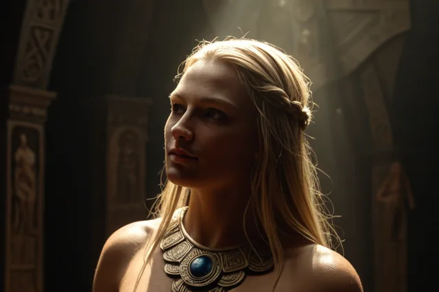

Дёгн
Дёгн (Dagr) — День, едет на коне Скривфиллире
Dagr
Dagr ("День") — бог дневного света, сын Нот (Ночи) от Дьюравинга. Ездит по небу на коне Скинфакси, чья грива освещает мир.
Происхождение: Сын Нот и Дьюравинга
Германическое имя: Dagaz
Роль: бог Дня
Семья
- Мать: Нот
- Отец: Djúpúðga
Легенды
- Каждый день Dagr объезжает небо на коне Скинфакси
- Грива коня освещает землю
- Dagr следует за своей матерью Нот
Источники
Поэтическая Эдда, Völuspá
ᚱ